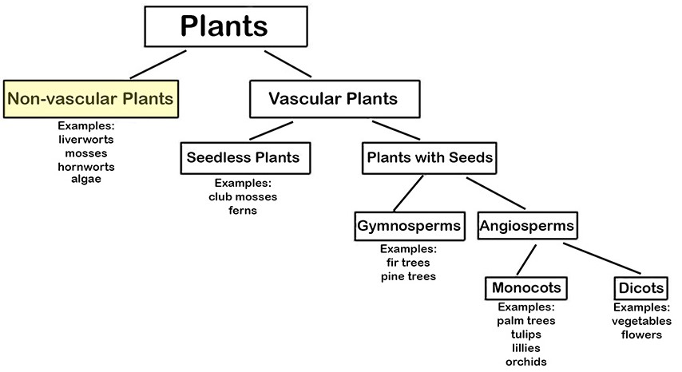
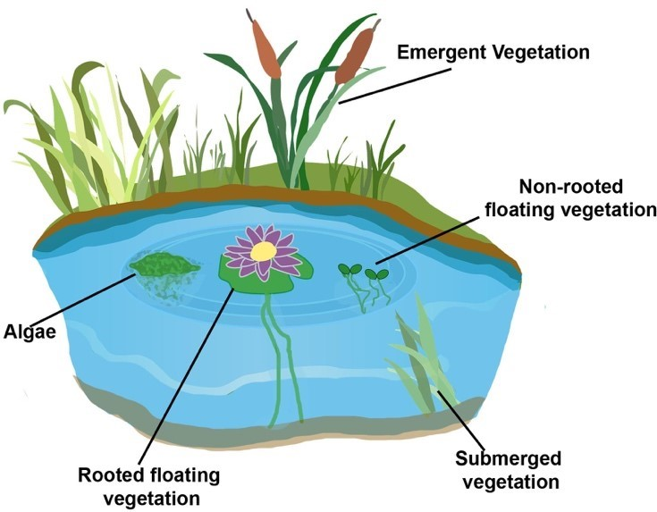

Two Types of Plants. Plants can be divided into Vascular and Non-Vascular Plants. This unit discusses non-vascular plants.
Non-vascular plants have very specific characteristics. The characteristics include lacking all of the following: (a) vascular tissue (cells that form tubes for transporting water and nutrients throughout the plant), (b) true leaves, (c) seeds, and (d) flowers. These plants do not have tubes to carry materials.
Materials including nutrients move slowly from one cell to another. Instead of roots, they have thin, hair-like structures (called rhizoids) that hold them to the ground. The rhizoids transfer water to the plants. For this reason, most of these plants are low to the ground and small, like mosses and green algae. Because they do not have true roots, non-vascular plants live in areas where there is a lot of water.
The picture below shows various forms of both vascular and non-vascular plants commonly found in ponds.



***Note for Teachers: You can access more information about this website and find other resources for science inquiry on the ISP Tutor website.
©2021 Klahr Lab, Carnegie Mellon University. All Rights Reserved
Carnegie Mellon University | Dept. of Psychology | 5000 Forbes Ave. | Pittsburgh, PA 15213 The TED project was funded in part by the Institute of Education Science (IES), Grant R305H060034, and in part by the National Science Foundation, Grant SBE035442. The ISP Tutor project is funded by IES, Grant R305A170176.
The research reported here was supported by the Institute of Education Sciences, U.S. Department of Education, through Grant R305A170176 to Carnegie Mellon University. The opinions expressed are those of the authors and do not represent views of the Institute or the U.S. Department of Education.